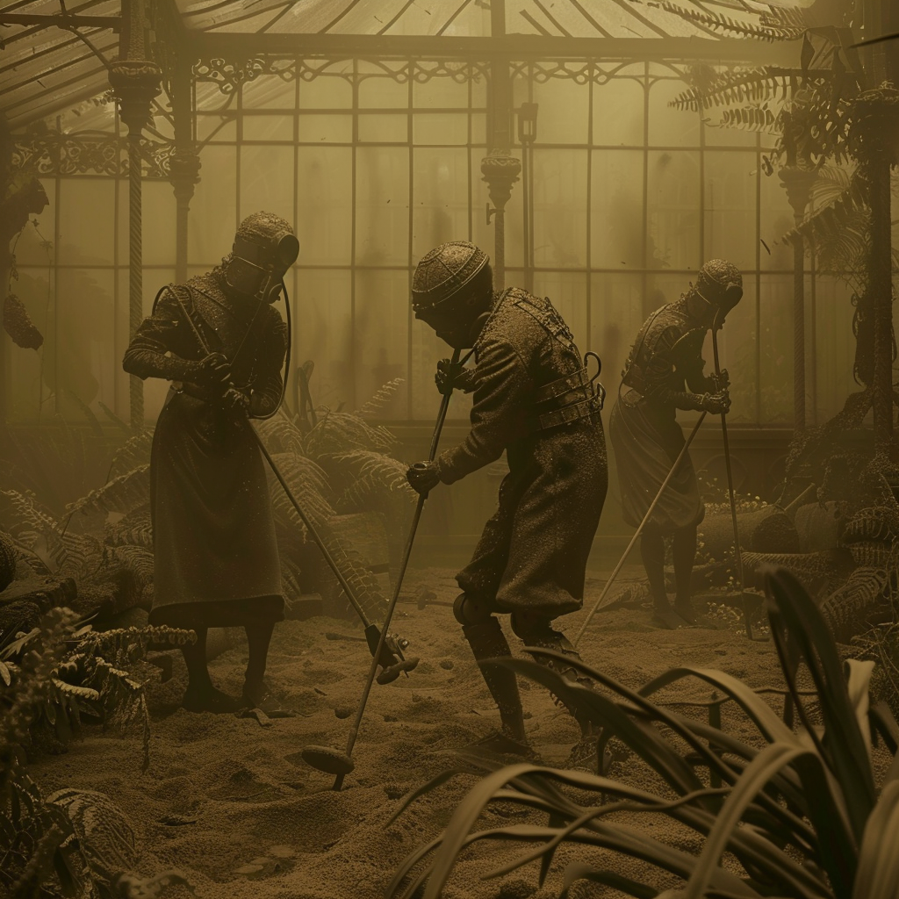
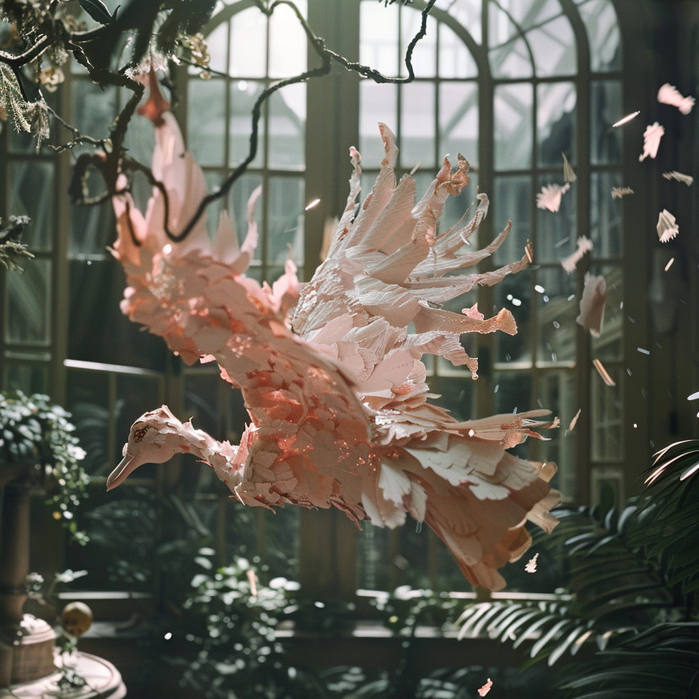
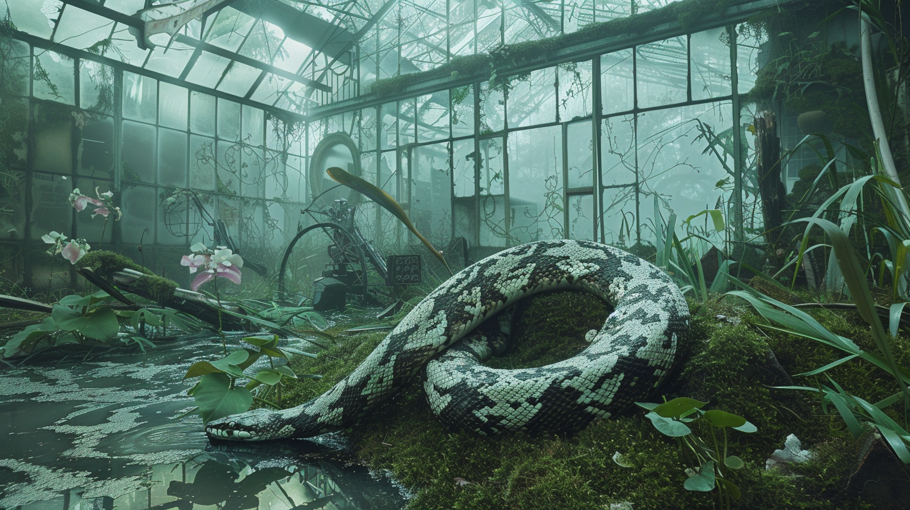
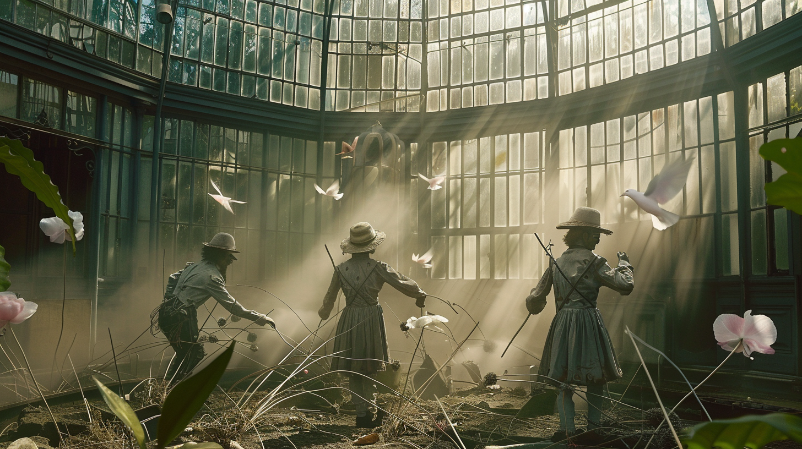
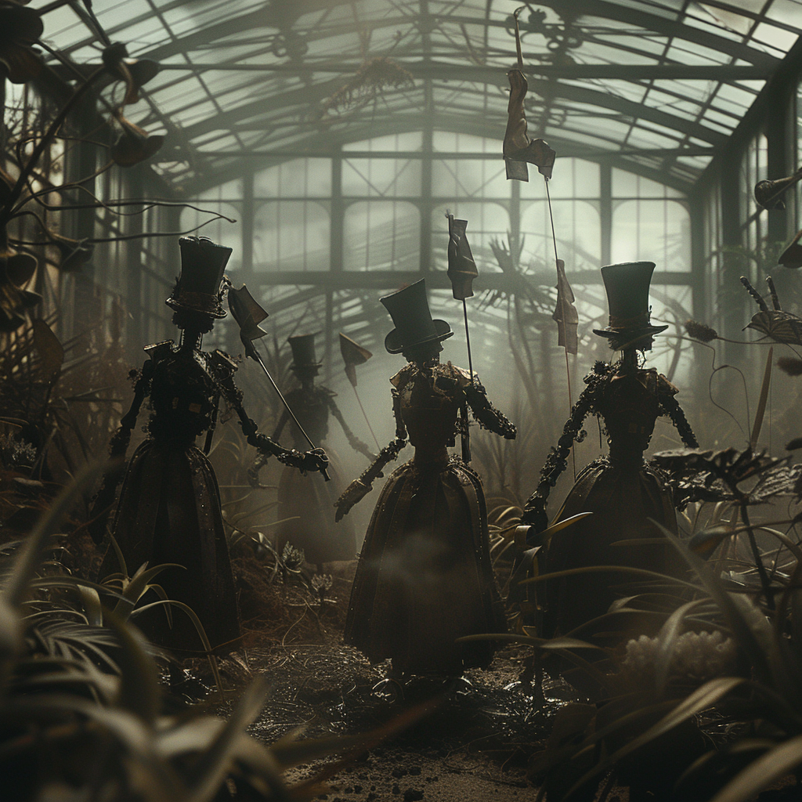
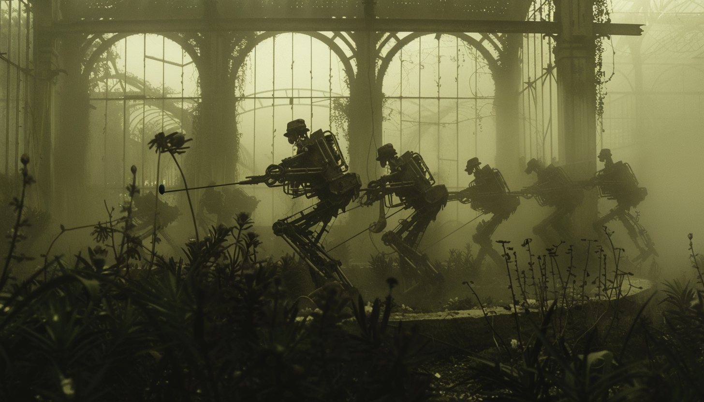
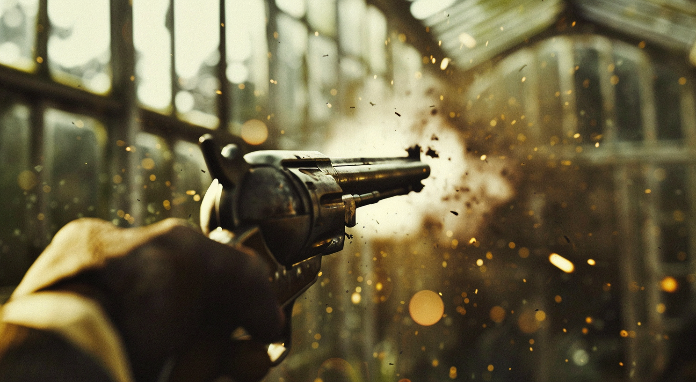
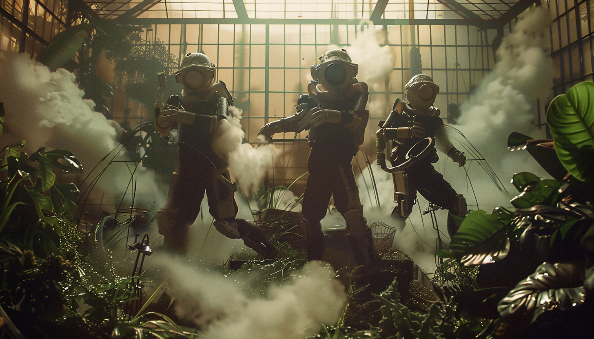

Orangerie
10 International Awards
— Magikal Charm Experimental Video & Film Fest

This 7.5-minute experimental video unfolds within a derelict Victorian greenhouse, presenting a non-linear narrative that interweaves past, present, and future. The film combines AI-generated scenes, camera movements, sound effects, and music into a kinetic, fractured dreamscape.
The greenhouse serves as a stage hosting automatons from different eras. Humanoid figures in quasi-hazmat suits sweep the grounds with devices resembling metal detectors, while in scenes recalling a bygone era, croquet sticks appear, creating a visual parallel. These searching figures seem to be attempting to uncover the location's enigmatic history or their own automata lineage. In other scenes, mechanical children engage in hunting sequences, pursuing robotic birds through overgrown foliage. Elsewhere, humanoid robots tend to withered plants.
Visual motifs of hunting and searching recur, creating parallels across different timeframes. Imagery shifts and transforms, suggesting themes of creation, discovery, and obsolescence in a world where past, present, and future coalesce.
The video's atmosphere incorporates gothic undertones, nostalgia, and surrealism, with elements of the absurd and macabre. It touches on concepts of decay, memory, and the fluidity of time, as indicated by the weathered greenhouse and the automata's anachronistic activities.
Created without traditional filming equipment, the project uses AI tools, including Runway ML (2.5), Magnific, Krea, Luma Labs: Dream Machine, Midjourney, and Eleven Labs, Suno AI. The resulting composition of fractured visuals and atmospheric soundscapes explores ideas about consciousness, the search for origins, and the cyclical nature of time in a reality where time seems to fold in on itself.

Director's Statement

"Orangerie" is an experiment in storytelling and artistic exploration, expanding my practice from visual art into filmmaking through the use of generative AI. Set in a derelict Victorian greenhouse, the film unfolds as a fragmented, non-linear narrative that bridges past, present, and future. This setting, marked by its decayed elegance and weathered grandeur, becomes a stage for automatons from different eras to enact scenes of searching, tending, and discovery.
The film reflects my fascination with time's fluidity, blending speculative imagery with gothic undertones, surrealism, and moments of absurdity. In Orangerie, visual motifs like hunting and searching recur across timeframes, suggesting questions about creation, obsolescence, and the lineage of these mechanical beings. Automatons in quasi-hazmat suits sweep the grounds as if uncovering their history, while others engage in more whimsical activities like croquet or hunting robotic birds through overgrown foliage.
Every element of the film—from its visuals to its soundscapes—was created using generative tools, including Runway ML, Midjourney, Luma Labs: Dream Machine, and Eleven Labs, among others. These tools enabled a process of iterative collaboration, allowing me to layer painterly compositions and evolving imagery in ways that reflect the fragmented and kinetic structure of the narrative. The resulting dreamscape intertwines human creativity and algorithmic unpredictability, exploring what's possible when traditional artistic instincts meet emerging technologies.
Thematically, Orangerie meditates on decay, memory, and the cyclical nature of time. The greenhouse, as a decaying structure filled with anachronistic figures, serves as a metaphor for evolving systems of creation and obsolescence. Its inhabitants, though mechanical, evoke deeply human questions about origins, purpose, and continuity in a reality where time seems to fold in on itself.
As an artist expanding into filmmaking, I see this project as both an expansion of my creative practice and a reflection on the shifting role of AI in art. While these tools provided new ways to explore narrative and aesthetics, every decision remained guided by human instincts and vision. In this way, Orangerie mirrors its own narrative tension between analog and artificial, past and future.
My hope is that Orangerie encourages viewers to reflect on their own relationship with time, memory, and technology, and to imagine the ways these elements intersect and shape our evolving understanding of the world.
  